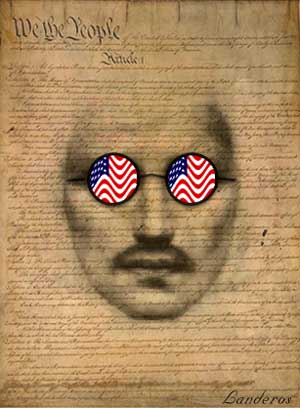

|

I am a patriot too
There are more fundamental expressions of patriotism than wealth, power and nationalism. What does it mean to be an American?
- - - - - - - - - -
by Samuel Raider
M
I A PATRIOT? I suppose, to my surprise, that I probably am. Not
that I am a flag-waving zealot. In fact, I really don't believe in
countries at all. So how do I come to be a patriot, yet not fit the
usual description, lifestyle or pattern of behavior?
I am a believer in truth and freedom. That sounds good. I am a believer in truth and freedom. Truth and Freedom. High ideals. Yet, in so many ways, that's what the founders of this country (the United States of America, in case you're wondering) had in mind. Well, that's what I think they had in mind. Their rhetoric convinces me that they had some mighty high ideals. Democracy. Government by the people. For the people... Equality...
Pursuit of happiness. Nice touch that. But perhaps it would be a good idea to examine what provides happiness? For some, it's pretty whacked. I mean perhaps Jeffery Daumer is an extreme case, but it seems to me that a lot of people are so interested in what they think is important that they are willing to cannibalize the less fortunate in order to get that all-important thing. Political Jeffery Daumers. Usually it's money. People seem willing and anxious to go to great lengths to get more money. I say "more money" because a lot of them already have "more money" and still aren't satisfied. Well, that's not a surprise, because it's the pursuit of money that has them hooked, as surely as some unfortunate homeless person addicted to crack cocaine or heroin. And if it isn't money, it's power. The pursuit of power, without the requisite common sense and commitment to service, is an empty and destructive path. Isn't it strange that many of the really rich, powerful, greedy types are so opposed to drugs, yet they are complete addicts themselves to probably the most dangerous and destructive drugs of all -- power and wealth?
So, wouldn't it be a much nicer world, not to mention less violent and far more healthy, if what provided happiness for people was service to others? Love of one another? Thinking, "What can I do for my world, for my fellow man?" Sure, we aren't all Mother Theresa. But we can aspire to a higher purpose...
But "higher purpose" today may translate as "nefarious purpose." From what I can see right now, I think I'm witnessing the end of an experiment. This experiment is often called the United States of America. It's often called democracy. Sometimes it seems to be synonymous with freedom, fairness and equality. More high ideals.
From what I can tell, sitting as I am in a position of little information and less power, there is a movement afoot that would place people with lots of money in charge of the government. Nothing new? Well, in this case, they are bypassing the usual pseudo-democratic process we have been using for a couple of hundred years in which predominantly rich people try to convince, cajole or bamboozle voters into believing in them so they can be "really important people," and, instead, they are basically buying and manipulating their way into positions of increased power. Now I'm not saying that some of our political types aren't idealists with high values and even altruistic motives. A few politicians are cut from extraordinary cloth. But I think most are little more than rag merchants, and those are the ones who end up corrupting the system.
The current movement that concerns me, which is currently being played out in various vignettes around the country (the United States of America), is not about freedom and the democratic process, but, in fact, seeks to use influence, power and money to cause the forcible redistribution of power to benefit... who? Those who already have money and power, of course.
Seeing all this and noticing my reaction to the blatancy of this attack on our values and the spoilage of our ideals... this is what makes me realize that I am a patriot. Cast suddenly in an unfamiliar role, I find myself unsure of my lines. I don't know my blocking, and I'm looking desperately for a stuntman to do the really difficult stuff. A political Jackie Chan, I'm not.
You know, it's easy to take potshots at George W. I mean, I sincerely believe that he's unqualified to be the president of any country (other than Texas, perhaps). But I strive to be generous and polite. George W is misguided, at best, criminal at worst, but he is part of a larger machine. For those of an older generation, he's Howdy Doody and Buffalo Bill is really pulling the strings somewhere off camera.
Can't we come up with intelligent, wise, honest, charismatic and literate leaders capable of making decisions that actually benefit our future instead of catering only to short-term profit and power brokering? And aren't we, as a people, as a nation with so many advantages, capable of recognizing the bullshit, the short-sighted policies, the lies and transparent deceit, and the ultimate end to this road in destruction of what we all hold dear, even when we differ in ideology, religion and geography? Can't we actually elect, overwhelmingly, someone who truly represents what this country is about?
I am sad to say that I live in insane times. It used to be interesting times, which harkens to the old Chinese curse, but now we've gone past interesting (unless you are capable of incredible detachment or you buy into all this myopic crap that's running our country and our economy) and into insane. I keep thinking of Hitler's Germany and the Fall of Rome. The signs are there, and you don't have to be Cassandra to read them.
Oh, but of course there's hope. The great silent majority could just stand up and be counted... but I have little more faith in the overall intelligence and discernment of the "majority" than I have in the minority that is currently in charge. I mean, it seems to me that the rich and powerful and unscrupulous power addicts are also much more effective at furthering their agenda, while I'm not sure the rest of us even have an agenda that translates into political action. I mean, where do love, spirit and service fit into the picture? Or, as Tina Turner asked the question, "What's love got to do with it?" Is it only in the minds of a small minority of ex-hippies? Is this torch only carried by a few people looking to make a difference in a different way?
I often meet young people who impress me with their high values and commitment to service to others. They have tattoos, piercings and sometimes intentional scars. They look scary, as if they have completely rejected society as I have known it all my life. And yet they desperately want to be of service to the world -- those who haven't given up -- and they have amazing and wonderful values. But almost universally, they have become disenfranchised from the political process. There used to be a term -- generation gap -- but what we have today is far bigger -- a credibility gap that grows wider with every perversion of our system at the hands of those who no longer care about its integrity. How often can we expect to stretch credulity, butcher truth and use empty rhetoric to hide from confrontation and still expect to have our incredibly intelligent and perceptive young people buy into the system?
So... I'm a patriot. I'm a patriot because I care about the high ideals that have always been the bedrock of this country. I'm a patriot because, if we could just step past our own self-interest and really model the values that we nominally represent, we, in the United States of America, could change the world. We have already won the Cold War -- not with guns, but with our culture and some of our ideology. Granted, we have exported our own particular form of greed all over the world, but we have also influenced many to believe in freedom. Now, if only we could become models of truth and real goodwill toward men AND women AND nature... what an amazing force we could be -- far more powerful than all the cruise missiles and cluster bomb brigades could ever hope to be. We can win the hearts, minds and imaginations of the world and become the leaders of a truly free and leaderful world. We can be Weapons of Mass Enlightenment.
I'm sure I'm not the only one. I'm not the only patriot. And I want to believe it's not too late to resurrect the original ideals of this country and wrest control back from those who use its own rhetoric to tear it apart and replace it with something totalitarian and egomaniacal. I want to believe that sanity will prevail and that we will consider the future of our children, our race, our ideals... that we will think seven generations ahead, that we will preserve the natural world even as we preserve our freedom and that of all humanity. I'd like to think we will come to our senses -- all of us, even George W and his gang of would-be thieves -- and really work for peace, harmony and equality on Earth.
So, I'm a patriot, and Earth is my country. Mankind is my clan. I want to be proud to be human. At the moment, I'm not.

|